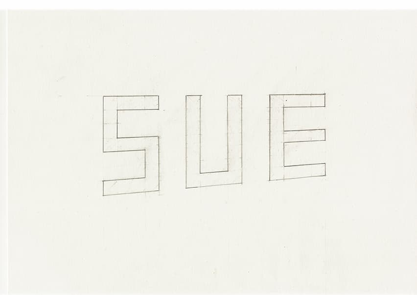
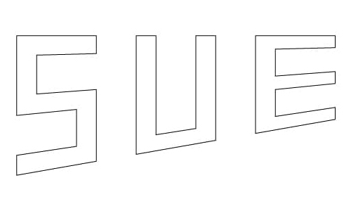
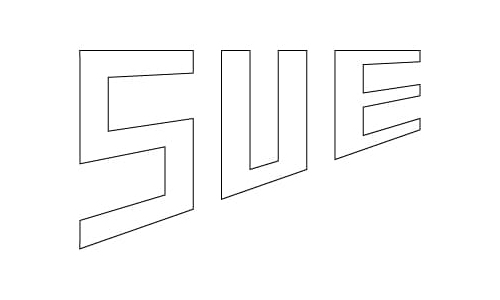

松本龍太郎 Ryutaro Matsumoto 世界で一番、自分自身のことが好き。 使用ソフト Adobe Illustrator Adobe Photoshop Logic Pro X 好きなもの プリキュアシリーズ ホイップクリーム Kawaii SNS Mail Mail : ryutarochang1234★icloud.com ★→@ Twitter : @ryutarodayo1234
2020 須恵町 広報すえ ロゴタイプデザイン 使用ソフト Adobe illustrator 作成期間 1ヶ月 制作過程 2020年10月11日 新しいロゴを考えるにあたり、須恵町について情報収集をした後、サムネイルを作成。 2020年10月18日 サムネイルから良いもの選び、大きく書き出す。  2020年10月27日 データ化し微調整。  2020年11月17日 さらにブラッシュアップする。  2020年11月18日 改めて確認、微調整し、完成。 関連サイト 須恵町公式WEBサイト 広報すえ